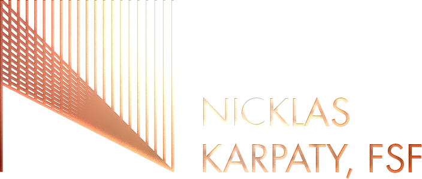
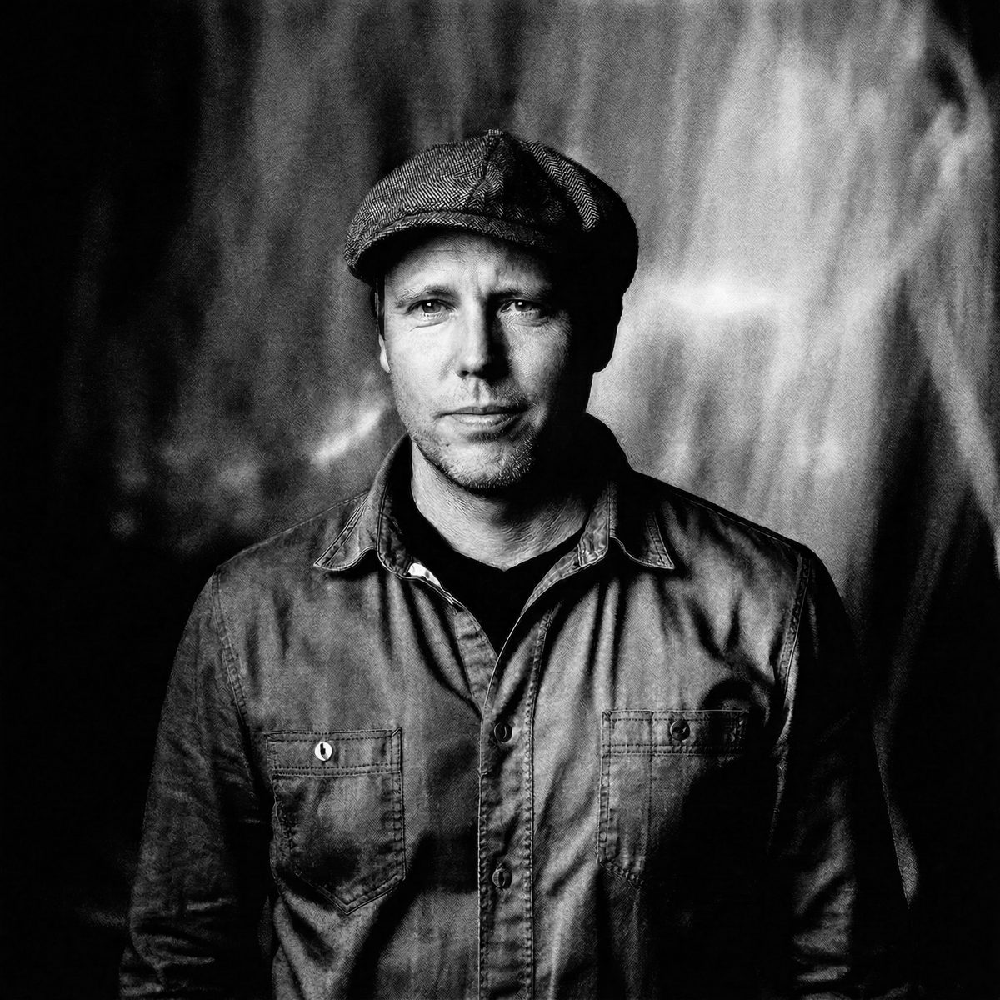

ARRI ALEXA 35 · 4.6K 3:225 fps · ISO 800 · 5600 KREC
Nicklas Karpaty, FSF
Cinematographer · Director of Photography
SHOWREELSelect a clip in the bin →

Cinematographer · Director of Photography

Storytelling dictates the language.
Over 20 years as a cinematographer across international drama, festival films and premium commercial branding. A steady hand with an open, experimental eye.
Testloggor, byts mot riktiga.